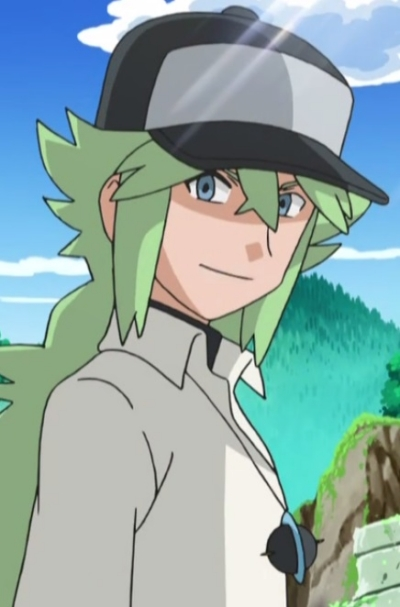

| |
Chrono |
|
Chrono is a high - ranking, powerful demon. He was considered a traitor. He betrayed the demon society to follow Aion's dream of freedom. He lost his horns, the source of his power. Once he meet Rosette, they made their contact. Chrono cares about Rosette unconditionally. |
 |
Eishi Tsukasa |
- Food Wars! The Second Plate OVA
- Food Wars! The Third Plate
- Food Wars! The Third Plate: Totsuki Train Arc
|
Eishi Tsukasa is a 90th Generation student at Tootsuki Culinary Academy and the current 1st seat of the Elite Ten Council. Eishi is quite forced upon him as the 1st seat. |
|  |
N |
|
N appeared as a recurring character in the Pokemon anime. He is a mysterious man with the ability to hear Pokemon voices. |
 |
Steven Stone |
- Pokemon Omega Rudy and Alpha Sapphire: Mega Special Animation
|
Steven Stone is the Hoenn region Champion. He is a collecter of rare stones. |
 |
Xerxes Break |
- Pandora Hearts
- Pandora Hearts Specials
|
Xerxes Break is an agent for Pandora and servant to Sharon Rainsworth. He has a legal contact with a chain. He adores sweet and cakes. He seems like a carefree, never serious, always smiling guy but shows a dangerous, evil side. |
 |
Zeref |
- Fairy Tail
- Fairy Tail (2014)
- Fairy Tail Movie 2: Dragon Cry
|
Zeref is the legendary dark mage that is human. He went down in history as the strongest and most evil mage to walk the Earth. He been living for over 400 years and still alive up into this day. He incredibly strong and a genius trying to learn new magic. He skill at living magic. He has created ten of thousand of demon with his living magic. He also skilled in death magic. |